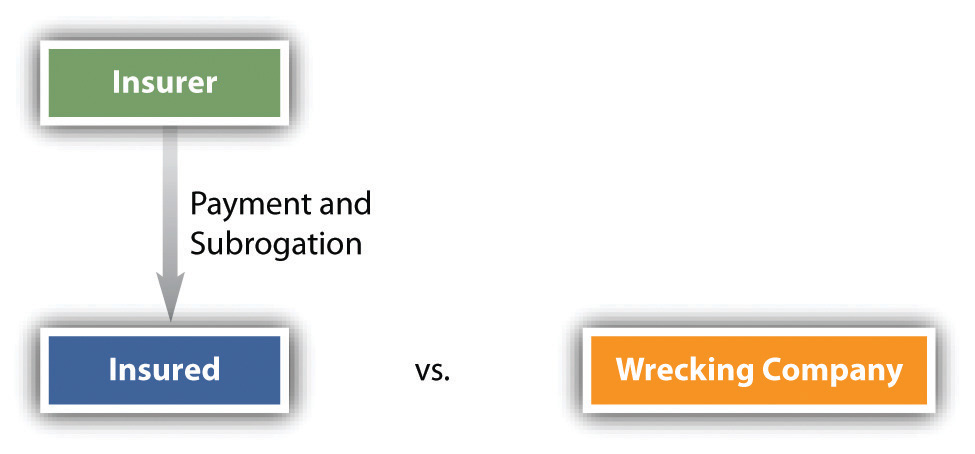

After reading this chapter, you should understand the following:
We conclude our discussions about property with a focus on insurance law, not only because insurance is a means of compensating an owner for property losses but also because the insurance contract itself represents a property right. In this chapter, we begin by examining regulation of the insurance industry. We then look at legal issues relating to specific types of insurance. Finally, we examine defenses that insurance companies might raise to avoid making payments under insurance policies.
Certain terms are usefully defined at the outset. InsuranceA contract of reimbursement. is a contract of reimbursement. For example, it reimburses for losses from specified perils, such as fire, hurricane, and earthquake. An insurerThe entity that agrees to provide insurance for the risk of certain kinds of losses, usually life, property, health, and liability claims. is the company or person who promises to reimburse. The insuredThe person or firm insured by a contract of insurance. (sometimes called the assured) is the one who receives the payment, except in the case of life insurance, where payment goes to the beneficiary named in the life insurance contract. The premium is the consideration paid by the insured—usually annually or semiannually—for the insurer’s promise to reimburse. The contract itself is called the policyThe contract for the insurance sought by the insured.. The events insured against are known as risksPotential losses that may be covered by policies of insurance. or perilsRisks that are insured against..
Regulation of insurance is left mainly in the hands of state, rather than federal, authorities. Under the McCarran-Ferguson Act, Congress exempted state-regulated insurance companies from the federal antitrust laws. Every state now has an insurance department that oversees insurance rates, policy standards, reserves, and other aspects of the industry. Over the years, these departments have come under fire in many states for being ineffective and “captives” of the industry. Moreover, large insurers operate in all states, and both they and consumers must contend with fifty different state regulatory schemes that provide very different degrees of protection. From time to time, attempts have been made to bring insurance under federal regulation, but none have been successful.
We begin with an overview of the types of insurance, from both a consumer and a business perspective. Then we examine in greater detail the three most important types of insurance: property, liability, and life.
Sometimes a distinction is made between public and private insurance. Public (or social) insurance includes Social Security, Medicare, temporary disability insurance, and the like, funded through government plans. Private insurance plans, by contrast, are all types of coverage offered by private corporations or organizations. The focus of this chapter is private insurance.
Life insurance provides for your family or some other named beneficiaries on your death. Two general types are available: term insuranceLife insurance with a death benefit but no accumulated savings. provides coverage only during the term of the policy and pays off only on the insured’s death; whole-life insuranceProvides savings as well as insurance and can let the insured collect before death. provides savings as well as insurance and can let the insured collect before death.
Health insurance covers the cost of hospitalization, visits to the doctor’s office, and prescription medicines. The most useful policies, provided by many employers, are those that cover 100 percent of the costs of being hospitalized and 80 percent of the charges for medicine and a doctor’s services. Usually, the policy will contain a deductible amount; the insurer will not make payments until after the deductible amount has been reached. Twenty years ago, the deductible might have been the first $100 or $250 of charges; today, it is often much higher.
A disability policy pays a certain percentage of an employee’s wages (or a fixed sum) weekly or monthly if the employee becomes unable to work through illness or an accident. Premiums are lower for policies with longer waiting periods before payments must be made: a policy that begins to pay a disabled worker within thirty days might cost twice as much as one that defers payment for six months.
A homeowner’s policy provides insurance for damages or losses due to fire, theft, and other named perils. No policy routinely covers all perils. The homeowner must assess his needs by looking to the likely risks in his area—earthquake, hailstorm, flooding, and so on. Homeowner’s policies provide for reduced coverage if the property is not insured for at least 80 percent of its replacement costs. In inflationary times, this requirement means that the owner must adjust the policy limits upward each year or purchase a rider that automatically adjusts for inflation. Where property values have dropped substantially, the owner of a home (or a commercial building) might find savings in lowering the policy’s insured amount.
Automobile insurance is perhaps the most commonly held type of insurance. Automobile policies are required in at least minimum amounts in all states. The typical automobile policy covers liability for bodily injury and property damage, medical payments, damage to or loss of the car itself, and attorneys’ fees in case of a lawsuit.
In this litigious society, a person can be sued for just about anything: a slip on the walk, a harsh and untrue word spoken in anger, an accident on the ball field. A personal liability policy covers many types of these risks and can give coverage in excess of that provided by homeowner’s and automobile insurance. Such umbrella coverage is usually fairly inexpensive, perhaps $250 a year for $1 million in liability.
Almost every business in every state must insure against injury to workers on the job. Some may do this through self-insurance—that is, by setting aside certain reserves for this contingency. Most smaller businesses purchase workers’ compensation policies, available through commercial insurers, trade associations, or state funds.
Any business that uses motor vehicles should maintain at least a minimum automobile insurance policy on the vehicles, covering personal injury, property damage, and general liability.
No business should take a chance of leaving unprotected its buildings, permanent fixtures, machinery, inventory, and the like. Various property policies cover damage or loss to a company’s own property or to property of others stored on the premises.
Professionals such as doctors, lawyers, and accountants will often purchase malpractice insurance to protect against claims made by disgruntled patients or clients. For doctors, the cost of such insurance has been rising over the past thirty years, largely because of larger jury awards against physicians who are negligent in the practice of their profession.
Depending on the size of the business and its vulnerability to losses resulting from damage to essential operating equipment or other property, a company may wish to purchase insurance that will cover loss of earnings if the business operations are interrupted in some way—by a strike, loss of power, loss of raw material supply, and so on.
Businesses face a host of risks that could result in substantial liabilities. Many types of policies are available, including policies for owners, landlords, and tenants (covering liability incurred on the premises); for manufacturers and contractors (for liability incurred on all premises); for a company’s products and completed operations (for liability that results from warranties on products or injuries caused by products); for owners and contractors (protective liability for damages caused by independent contractors engaged by the insured); and for contractual liability (for failure to abide by performances required by specific contracts).
Some years ago, different types of individual and business coverage had to be purchased separately and often from different companies. Today, most insurance is available on a package basis, through single policies that cover the most important risks. These are often called multiperil policies.
Although insurance is a need for every US business, and many businesses operate in all fifty states, regulation of insurance has remained at the state level. There are several forms of public insurance (Social Security, disability, Medicare) and many forms of private insurance. Both individuals and businesses have significant needs for various types of insurance, to provide protection for health care, for their property, and for legal claims made against them by others.
We turn now to a more detailed discussion of the law relating to the three most common types of insurance: property, liability, and life insurance.
It is sometimes said that property is the foundation for a system of free market capitalism. If so, then protecting property is a necessary part of being part of that system, whether as an individual or as a business entity.
As we have noted, property insurance provides coverage for real and personal property owned by a business or an individual. Property insurance is also part of automobile policies covering damage to the car caused by an accident (collision coverage) or by other events such as vandalism or fire (comprehensive coverage). Different levels of coverage are available. For example, many basic homeowners’ policies cover damage resulting from the following types of perils only: fire and lightning, windstorm and hail, explosions, riots and civil commotions, aircraft and vehicular accidents, smoke, vandalism and malicious mischief, theft, and breakage of glass that is part of a building.
A broader policy, known as broad coverage, also includes these perils: falling objects; weight of ice, snow, and sleet; collapse of buildings; sudden and accidental damage to heating systems; accidental discharge from plumbing, heating, or air-conditioning systems; freezing of heating, plumbing, and air conditioning systems; and sudden and accidental injury from excess currents to electrical appliances and wiring. Even with the broadest form of coverage, known as comprehensive, which covers all perils except for certain named exclusions, the homeowner can be left without protection. For example, comprehensive policies do not usually cover damage resulting from flooding, earthquakes, war, or nuclear radiation. The homeowner can purchase separate coverage for these perils but usually at a steep premium.
To purchase property insurance, the would-be insured must have an insurable interestA sufficiently substantial interest in property or someone’s life to support a contract to insure it. in the property. Insurable interest is a real and substantial interest in specific property such that a loss to the insured would ensue if the property were damaged. You could not, for instance, take out an insurance policy on a motel down the block with which you have no connection. If a fire destroyed it, you would suffer no economic loss. But if you helped finance the motel and had an investment interest in it, you would be permitted to place an insurance policy on it. This requirement of an insurable interest stems from the public policy against wagering. If you could insure anything, you would in effect be betting on an accident.
To insure property, therefore, you must have a legal interest and run the risk of a pecuniary loss. Any legal interest is sufficient: a contractual right to purchase, for instance, or the right of possession (a bailee may insure). This insurable interest must exist both at the time you take out the policy and at the time the loss occurs. Moreover, coverage is limited to the extent of the interest. As a mortgagee, you could ensure only for the amount still due.
Prior to the financial meltdown of 2008, many investment banks took insurance against possible losses from collateralized debt obligations (CDOs) and other financial products based on subprime loans. The principal insurer was American International Group, Inc. (AIG), which needed a US government bailout when the risks covered by AIG turned out to be riskier than AIG’s models had projected.
Figure 19.1 Subrogation
SubrogationSubstitution of one person for another who has a legal claim or right. is the substitution of one person for another in pursuit of a legal claim. When an insured is entitled to recover under a policy for property damage, the insurer is said to be subrogated to the insured’s right to sue any third party who caused the damage. For example, a wrecking company negligently destroys an insured’s home, mistaking it for the building it was hired to tear down. The insured has a cause of action against the wrecking company. If the insured chooses instead to collect against a homeowner’s policy, the insurance company may sue the wrecking company in the insured’s place to recover the sum it was obligated to pay out under the policy (see Figure 19.1 "Subrogation").
AssignmentThe transfer of any rights in a contract of insurance. is the transfer of any property right to another. In property insurance, a distinction is made between assignment of the coverage and assignment of the proceeds. Ordinarily, the insured may not assign the policy itself without the insurer’s permission—that is, he may not commit the insurer to insure someone else. But the insured may assign any claims against the insurer—for example, the proceeds not yet paid out on a claim for a house that has already burned down.
Insurance is a means of spreading risk. It is economically feasible because not every house burns down and not every car is stolen. The number that do burn down or that are stolen can be calculated and the premium set accordingly. Events that will certainly happen, like ordinary wear and tear and the destruction of property through deliberate acts such as arson, must be excluded from such calculations. The injury must result from accidental, not deliberate, causes.
Most commercial property policies contain a so-called coinsurance clauseIn property insurance, a clause that requires the insured to maintain insurance equal to a specified percentage of the property value., which requires the insured to maintain insurance equal to a specified percentage of the property value. It is often 80 percent but may be higher or lower. If the property owner insures for less than that percentage, the recovery will be reduced. In effect, the owner becomes a coinsurer with the insurance company. The usual formula establishes the proportion that the insurer must pay by calculating the ratio of (1) the amount of insurance actually taken to (2) the coinsurance percentage multiplied by the total dollar value of the property. Suppose a fire causes $160,000 damage to a plant worth $1,000,000. The plant should have been insured for 80 percent ($800,000), but the insured took out only a $500,000 policy. He will recover only $100,000. To see why, multiply the total damages of $160,000 by the coinsurance proportion of five-eighths ($500,000 of insurance on the required minimum of $800,000). Five-eighths of $160,000 equals $100,000, which would be the insured’s recovery where the policy has a coinsurance clause.
Liability insurance has taken on great importance for both individuals and businesses in contemporary society. Liability insurance covers specific types of legal liabilities that a homeowner, driver, professional, business executive, or business itself might incur in the round of daily activities. A business is always at risk in sending products into the marketplace. Doctors, accountants, real estate brokers, insurance agents, and lawyers should obtain liability insurance to cover the risk of being sued for malpractice. A prudent homeowner will acquire liability insurance as part of homeowner’s policy and a supplemental umbrella policy that insures for liability in excess of a limit of, say, $100,000 in the regular homeowner’s policy. And businesses, professionals, and individuals typically acquire liability insurance for driving-related activities as part of their automobile insurance. In all cases, liability policies cover not only any settlement or award that might ultimately have to be paid but also the cost of lawyers and related expenses in defending any claims.
Liability insurance is similar in several respects to property insurance and is often part of the same package policy. As with property insurance, subrogation is allowed with liability insurance, but assignment of the policy is not allowed (unless permission of the insurer is obtained), and intentional losses are not covered. For example, an accountant who willfully helps a client conceal fraud will not recover from his malpractice insurance policy if he is found guilty of participating in the fraud.
The major legal development of the century relating to liability insurance has been the elimination of liability in the two areas of greatest exposure: in the workplace and on the highway. In the next unit on agency law, we discuss the no-fault system of workers’ compensation, under which a worker receives automatic benefits for workplace injuries and gives up the right to sue the employer under common-law theories of liability. Here we will look briefly at the other major type of no-fault system: recovery for damages stemming from motor vehicle accidents.
“No-fault” means that recovery for damages in an accident no longer depends on who was at fault in causing it. A motorist will file a claim to recover his actual damages (medical expenses, income loss) directly from his own insurer. The no-fault system dispenses with the costly and uncertain tort system of having to prove negligence in court. Many states have adopted one form or another of no-fault automobile insurance, but even in these states the car owner must still carry other insurance. Some no-fault systems have a dollar “threshold” above which a victim may sue for medical expenses or other losses. Other states use a “verbal threshold,” which permits suits for “serious” injury, defined variously as “disfigurement,” “fracture,” or “permanent disability.” These thresholds have prevented no-fault from working as efficiently as theory predicts. Inflation has reduced the power of dollar thresholds (in some states as low as $200) to deter lawsuits, and the verbal thresholds have standards that can only be defined in court, so much litigation continues.
No state has adopted a “pure” no-fault system. A pure no-fault system trades away entirely the right to sue in return for the prompt payment of “first-party” insurance benefits—that is, payment by the victim’s own insurance company instead of traditional “third-party” coverage, in which the victim collects from the defendant’s insurance company.
Among the criticisms of no-fault insurance is the argument that it fails to strengthen the central purpose of the tort system: to deter unsafe conduct that causes accidents. No-fault lessens, it is said, the incentive to avoid accidents. In any event, no-fault automobile insurance has been a major development in the insurance field since 1970 and seems destined to be a permanent fixture of insurance law.
The two types of life insurance mentioned in Section 19.1.2 "Types of Insurance for the Individual", term and whole-life policies, are important both to individuals and to businesses (insurance for key employees). As with property insurance, whoever takes out a life insurance policy on a person’s life must have an insurable interest. Everyone has an insurable interest in his own life and may name whomever he pleases as beneficiary; the beneficiary need not have an insurable interest. But the requirement of insurable interest restricts those who may take out insurance on someone else’s life. A spouse or children have an insurable interest in a spouse or parent. Likewise, a parent has an insurable interest in any minor child. That means that a wife, for example, may take out a life insurance policy on her husband without his consent. But she could not take out a policy on a friend or neighbor. As long as the insurable interest existed when the policy was taken out, the owner may recover when the insured dies, even if the insurable interest no longer exists. Thus a divorced wife who was married when the policy was obtained may collect when her ex-husband dies as long as she maintained the payments. Likewise, an employer has an insurable interest in his key employees and partners; such insurance policies help to pay off claims of a partner’s estate and thus prevent liquidation of the business.
Unlike property insurance, life insurance does not permit subrogation. The insurer must pay the claim when the insured dies and may not step into the shoes of anyone entitled to file a wrongful death claim against a person who caused the death. Of course, if the insured died of natural causes, there would be no one to sue anyway.
Unless the insured reserves the right to change beneficiaries, his or her initial designation is irrevocable. These days, however, most policies do reserve the right if certain formalities are observed, including written instructions to the insurer’s home office to make the change and endorsement of the policy. The insured may assign the policy, but the beneficiary has priority to collect over the assignee if the right to change beneficiaries has not been reserved. If the policy permits beneficiaries to be changed, then the assignee will have priority over the original beneficiary.
Two types of intentional losses are especially important in life insurance: suicide and murder of the insured by the beneficiary.
In a majority of states, in the absence of a suicide clause in the policy, when an insured commits suicide, the insurer need not pay out if the policy is payable to the insured’s estate. However, if the policy is payable to a third person (e.g., the insured’s company), payment will usually be allowed. And if an insured kills himself while insane, all states require payment, whether to the estate or a third party. Most life insurance policies today have a provision that explicitly excepts suicide from coverage for a limited period, such as two years, after the policy is issued. In other words, if the insured commits suicide within the first two years, the insurer will refund the premiums to his estate but will not pay the policy amount. After two years, suicide is treated as any other death would be.
Under the law in every state, a beneficiary who kills the insured in order to collect the life insurance is barred from receiving it. But the invocation of that rule does not absolve the insurer of liability to pay the policy amount. An alternate beneficiary must be found. Sometimes the policy will name contingent beneficiaries, and many, but not all, states require the insurer to pay the contingent beneficiaries. When there are no contingent beneficiaries or the state law prohibits paying them, the insurer will pay the insured’s estate. Not every killing is murder; the critical question is whether the beneficiary intended his conduct to eliminate the insured in order to collect the insurance.
The willful, unlawful, and felonious killing of the insured by the person named as beneficiary in a life policy results in the forfeiture of all rights of such person therein. It is unnecessary that there should be an express exception in the contract of insurance forbidding a recovery in favor of such a person in such an event. On considerations of public policy, the death of the insured, willfully and intentionally caused by the beneficiary of the policy, is an excepted risk so far as the person thus causing the death is concerned.
Many kinds of insurance are available for individuals and businesses. For individuals, life insurance, homeowner’s insurance, and automobile insurance are common, with health insurance considered essential but often expensive. Businesses with sufficient employees will obtain workers’ compensation insurance, property insurance, and liability insurance, and auto insurance for any employees driving company vehicles. Insurance companies will often pay a claim for their insured and take over the insured’s claim against a third party.
Liability insurance is important for individuals, companies, and licensed professionals. A trend toward no-fault in liability insurance is seen in claims for work-related injuries (workers’ compensation) and in automobile insurance. Life insurance is common for most families and for businesses that want to protect against the loss of key employees.
It is a common perception that because insurance contracts are so complex, many insureds who believe they are covered end up with uninsured losses. In other words, the large print giveth, and the small print taketh away. This perception is founded, to some extent, on the use by insurance companies of three common defenses, all of which relate to a duty of good faith on the part of the insured: (1) representation, (2) concealment, and (3) warranties.
A representationStatements made by the insured in the application process. is a statement made by someone seeking an insurance policy—for example, a statement that the applicant did (or did not) consult a doctor for any illness during the previous five years. An insurer has grounds to avoid the contract if the applicant makes a false representation. The misrepresentation must have been material; that is, a false description of a person’s hair coloring should not defeat a claim under an automobile accident policy. But a false statement, even if innocent, about a material fact—for instance, that no one in the family uses the car to go to work, when unbeknownst to the applicant, his wife uses the car to commute to a part-time job she hasn’t told him about—will at the insurer’s option defeat a claim by the insured to collect under the policy. The accident need not have arisen out of the misrepresentation to defeat the claim. In the example given, the insurance company could refuse to pay a claim for any accident in the car, even one occurring when the car was driven by the husband to go to the movies, if the insurer discovered that the car was used in a manner in which the insured had declared it was not used. This chapter’s case, Mutual Benefit Life Insurance Co. v. JMR Electronics Corp., (see Section 19.4.1 "Misrepresentation to Insurer"), illustrates what happens when an insured misrepresents his smoking habits.
An insured is obligated to volunteer to the insurer all material facts that bear on insurability. The failure of an insured to set forth such information is a concealmentThe failure of an insured to set forth all the material facts in applying for insurance., which is, in effect, the mirror image of a false representation. But the insured must have had a fraudulent intent to conceal the material facts. For example, if the insured did not know that gasoline was stored in his basement, the insurer may not refuse to pay out on a fire insurance policy.
Many insurance policies covering commercial property will contain warranties. For example, a policy may have a warranty that the insured bank has installed or will install a particular type of burglar alarm system. Until recently, the rule was strictly enforced: any breach of a warranty voided the contract, even if the breach was not material. A nonmaterial breach might be, for example, that the bank obtained the alarm system from a manufacturer other than the one specified, even though the alarm systems are identical. In recent years, courts or legislatures have relaxed the application of this rule. But a material breach still remains absolute grounds for the insurer to avoid the contract and refuse to pay.
In life insurance cases, the three common defenses often are unavailable to the insurer because of the so-called incontestable clauseA clause in a life insurance policy that limits the insurance carrier’s right to contest insurability after a certain number of years of premium payments on the policy.. This states that if the insured has not died during a specified period of time in which the life insurance policy has been in effect (usually two years), then the insurer may not refuse to pay even if it is later discovered that the insured committed fraud in applying for the policy. Few nonlife policies contain an incontestable clause; it is used in life insurance because the effect on many families would be catastrophic if the insurer claimed misrepresentation or concealment that would be difficult to disprove years later when the insured himself would no longer be available to give testimony about his intentions or knowledge.
Like the insured, the insurer must act in good faith. Thus defenses may be unavailable to an insurer who has waived them or acted in such a manner as to create an estoppel. Suppose that when an insured seeks to increase the amount on his life insurance policy, the insurance company learns that he lied about his age on his original application. Nevertheless, the company accepts his application for an increase. The insured then dies, and the insurer refuses to pay his wife any sum. A court would hold that the insurer had waived its right to object, since it could have cancelled the policy when it learned of the misrepresentation. Finally, an insurer that acts in bad faith by denying a claim that it knows it should pay may find itself open to punitive damage liability.
Some claims by insured parties can be legally denied by insurance companies where the insured has made a material misrepresentation. Some claims can be legally denied if the insured has deliberately concealed important matters in applying for insurance coverage. Because insurance coverage is by contract, courts often strictly construe the contract language, and if the language does not cover the insured, the courts will typically not bend the language of the contract to help the insured.
Mutual Benefit Life Insurance Co. v. JMR Electronics Corp.
848 F.2d 30 (2nd Cir. 1988)
PER CURIAM
JMR Electronics Corporation (“JMR”) appeals from a judgment of the District Court for the Southern District of New York (Robert W. Sweet, Judge) ordering rescission of a life insurance policy issued by plaintiff-appellant The Mutual Benefit Life Insurance Company (“Mutual”) and dismissing JMR’s counterclaim for the policy’s proceeds. Judge Sweet ruled that a misrepresentation made in the policy application concerning the insured’s history of cigarette smoking was material as a matter of law. Appellant contends that the misrepresentation was not material because Mutual would have provided insurance—albeit at a higher premium rate—even if the insured’s smoking history had been disclosed. We agree with the District Court that summary judgment was appropriate and therefore affirm.
The basic facts are not in dispute. On June 24, 1985, JMR submitted an application to Mutual for a $ 250,000 “key man” life insurance policy on the life of its president, Joseph Gaon, at the non-smoker’s discounted premium rate. Mutual’s 1985 Ratebook provides: “The Non-Smoker rates are available when the proposed insured is at least 20 years old and has not smoked a cigarette for at least twelve months prior to the date of the application.” Question 13 of the application inquired about the proposed insured’s smoking history. Question 13(a) asked, “Do you smoke cigarettes? How many a day?” Gaon answered this question, “No.” Question 13(b) asked, “Did you ever smoke cigarettes? “ Gaon again answered, “No.” Based on these representations, Mutual issued a policy on Gaon’s life at the non-smoker premium rate.
Gaon died on June 22, 1986, within the period of contestability contained in policy, see N.Y. Ins. Law § 3203 (a)(3) (McKinney 1985). Upon routine investigation of JMR’s claim for proceeds under the policy, Mutual discovered that the representations made in the insurance application concerning Gaon’s smoking history were untrue. JMR has stipulated that, at the time the application was submitted, Gaon in fact “had been smoking one-half of a pack of cigarettes per day for a continuous period of not less than 10 years.” Mutual brought this action seeking a declaration that the policy is void. Judge Sweet granted Mutual’s motion for summary judgment, dismissed JMR’s counterclaim for the proceeds of the policy, and ordered rescission of the insurance policy and return of JMR’s premium payments, with interest.
Under New York law, which governs this diversity suit, “it is the rule that even an innocent misrepresentation as to [the applicant’s medical history], if material, is sufficient to allow the insurer to avoid the contract of insurance or defeat recovery thereunder.” Process Plants Corp. v. Beneficial National Life Insurance Co., 366 N.E.2d 1361 (1977). A “misrepresentation” is defined by statute as a false “statement as to past or present fact, made to the insurer…at or before the making of the insurance contract as an inducement to the making thereof.” N.Y. Ins. Law § 3105(a) (McKinney 1985). A misrepresentation is “material” if “knowledge by the insurer of the facts misrepresented would have led to a refusal by the insurer to make such contract.” Id. § 3105(b).…
In the present case JMR has stipulated that Gaon’s smoking history was misrepresented in the insurance application. However, JMR disputes that this misrepresentation is material as a matter of law. JMR argues that under New York law a misrepresentation is not material unless the insurer can demonstrate that, had the applicant provided complete and accurate information, coverage either would have been refused or at the very least withheld pending a more detailed underwriting examination. In JMR’s view summary judgment was inappropriate on the facts of this case because a jury could reasonably have found that even “had appellee been aware of Gaon’s smoking history, a policy at the smoker’s premium rate would have been issued.” JMR takes the position that the appropriate remedy in this situation is to permit recovery under the policy in the amount that the premium actually paid would have purchased for a smoker.
We agree with Judge Sweet that this novel theory is without basis in New York law. The plain language of the statutory definition of “materiality,” found in section 3105(b), permits avoidance of liability under the policy where “knowledge by the insurer of the facts misrepresented would have led to a refusal by the insurer to make such contract.” (emphasis added) Moreover, numerous courts have observed that the materiality inquiry under New York law is made with respect to the particular policy issued in reliance upon the misrepresentation.
* * *
There is no doubt that Mutual was induced to issue the non-smoker, discounted-premium policy to JMR precisely as a result of the misrepresentations made by Gaon concerning his smoking history. That Mutual might not have refused the risk on any terms had it known the undisclosed facts is irrelevant. Most risks are insurable at some price. The purpose of the materiality inquiry is not to permit the jury to rewrite the terms of the insurance agreement to conform to the newly disclosed facts but to make certain that the risk insured was the risk covered by the policy agreed upon. If a fact is material to the risk, the insurer may avoid liability under a policy if that fact was misrepresented in an application for that policy whether or not the parties might have agreed to some other contractual arrangement had the critical fact been disclosed. As observed by Judge Sweet, a contrary result would reward the practice of misrepresenting facts critical to the underwriter’s task because the unscrupulous (or merely negligent) applicant “would have everything to gain and nothing to lose” from making material misrepresentations in his application for insurance. Such a claimant could rest assured not only that he may demand full coverage should he survive the contestability period, N.Y. Ins. Law § 3203 (a)(3), but that even in the event of a contested claim, he would be entitled to the coverage that he might have contracted for had the necessary information been accurately disclosed at the outset. New York law does not permit this anomalous result. The judgment of the District Court is affirmed.
Insurance is an inescapable cost of doing business in a modern economy and an important service for any individual with dependents or even a modest amount of property. Most readers of this book will someday purchase automobile, homeowner’s, and life insurance, and many readers will deal with insurance in the course of a business career.
Most insurance questions are governed by contract law, since virtually all insurance is voluntary and entered into through written agreements. This means that the insured must pay careful attention to the wording of the policies to determine what is excluded from coverage and to ensure that he makes no warranties that he cannot keep and no misrepresentations or concealments that will void the contract. But beyond contract law, some insurance law principles—such as insurable interest and subrogation rights—are important to bear in mind. Defenses available to an insurance company may be based upon representation, concealment, or warranties, but an insurer that is overzealous in denying coverage may find itself subject to punitive damages.
The substitution of one person for another in pursuit of a legal claim is called
Most insurance questions are covered by
Common defenses used by insurance companies include
A coinsurance clause
Property insurance typically covers